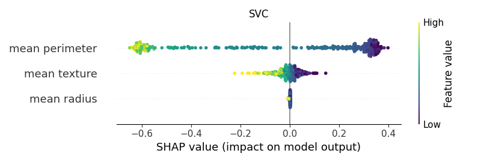

Note
Click here to download the full example code
Shap - Main 02


- 

Out:
Feature names only support names that are all strings. Got feature names with dtypes: ['str_']. An error will be raised in 1.2.
Feature names only support names that are all strings. Got feature names with dtypes: ['str_']. An error will be raised in 1.2.
Feature names only support names that are all strings. Got feature names with dtypes: ['str_']. An error will be raised in 1.2.
Feature names only support names that are all strings. Got feature names with dtypes: ['str_']. An error will be raised in 1.2.
The use of label encoder in XGBClassifier is deprecated and will be removed in a future release. To remove this warning, do the following: 1) Pass option use_label_encoder=False when constructing XGBClassifier object; and 2) Encode your labels (y) as integers starting with 0, i.e. 0, 1, 2, ..., [num_class - 1].
[11:25:18] WARNING: C:/Users/Administrator/workspace/xgboost-win64_release_1.5.1/src/learner.cc:1115: Starting in XGBoost 1.3.0, the default evaluation metric used with the objective 'binary:logistic' was changed from 'error' to 'logloss'. Explicitly set eval_metric if you'd like to restore the old behavior.
Feature names only support names that are all strings. Got feature names with dtypes: ['str_']. An error will be raised in 1.2.
Stochastic Optimizer: Maximum iterations (200) reached and the optimization hasn't converged yet.
Feature names only support names that are all strings. Got feature names with dtypes: ['str_']. An error will be raised in 1.2.
Feature names only support names that are all strings. Got feature names with dtypes: ['str_']. An error will be raised in 1.2.
<IPython.core.display.HTML object>
--------------------------------------------------------------------------------
Classifier: GaussianNB()
Kernel type: <class 'shap.explainers._kernel.Kernel'>
0%| | 0/375 [00:00<?, ?it/s]
3%|##3 | 11/375 [00:00<00:03, 106.64it/s]
6%|####6 | 22/375 [00:00<00:03, 108.59it/s]
9%|#######2 | 34/375 [00:00<00:03, 109.30it/s]
12%|#########6 | 45/375 [00:00<00:03, 107.51it/s]
15%|############ | 56/375 [00:00<00:03, 92.53it/s]
18%|##############2 | 66/375 [00:00<00:03, 85.37it/s]
21%|################6 | 77/375 [00:00<00:03, 91.45it/s]
23%|################### | 88/375 [00:00<00:02, 96.27it/s]
26%|#####################3 | 99/375 [00:01<00:02, 99.07it/s]
29%|#######################1 | 110/375 [00:01<00:02, 101.16it/s]
32%|#########################4 | 121/375 [00:01<00:02, 102.53it/s]
35%|###########################8 | 132/375 [00:01<00:02, 104.09it/s]
38%|##############################5 | 143/375 [00:01<00:02, 89.83it/s]
41%|################################6 | 153/375 [00:01<00:03, 71.02it/s]
43%|##################################3 | 161/375 [00:01<00:03, 64.41it/s]
45%|#################################### | 169/375 [00:01<00:03, 64.44it/s]
47%|#####################################7 | 177/375 [00:02<00:02, 67.08it/s]
50%|#######################################6 | 186/375 [00:02<00:02, 72.30it/s]
52%|#########################################8 | 196/375 [00:02<00:02, 78.63it/s]
55%|###########################################7 | 205/375 [00:02<00:02, 80.38it/s]
57%|#############################################8 | 215/375 [00:02<00:01, 83.68it/s]
60%|################################################ | 225/375 [00:02<00:01, 86.98it/s]
63%|##################################################1 | 235/375 [00:02<00:01, 89.13it/s]
65%|####################################################2 | 245/375 [00:02<00:01, 88.94it/s]
68%|######################################################4 | 255/375 [00:02<00:01, 90.76it/s]
71%|########################################################5 | 265/375 [00:03<00:01, 91.31it/s]
73%|##########################################################6 | 275/375 [00:03<00:01, 92.19it/s]
76%|############################################################8 | 285/375 [00:03<00:00, 93.61it/s]
79%|##############################################################9 | 295/375 [00:03<00:00, 94.63it/s]
81%|################################################################# | 305/375 [00:03<00:00, 87.80it/s]
84%|##################################################################9 | 314/375 [00:03<00:00, 87.45it/s]
86%|####################################################################9 | 323/375 [00:03<00:00, 86.18it/s]
89%|######################################################################8 | 332/375 [00:03<00:00, 85.81it/s]
91%|########################################################################7 | 341/375 [00:03<00:00, 85.54it/s]
94%|##########################################################################8 | 351/375 [00:04<00:00, 87.17it/s]
97%|#############################################################################2 | 362/375 [00:04<00:00, 91.31it/s]
99%|###############################################################################3| 372/375 [00:04<00:00, 93.38it/s]
100%|################################################################################| 375/375 [00:04<00:00, 87.93it/s]
[[-0.2143723 -0.19038141 -0.22085071]
[ 0.15549902 0.04950881 0.16806476]
[-0.31382936 0.06041049 -0.31223003]
...
[-0.10057844 0.0701043 -0.13986502]
[ 0.14968807 0.0257892 0.15703457]
[-0.19725508 0.15063206 -0.2459545 ]]
base value: 0.6256054145239283
0%| | 0/375 [00:00<?, ?it/s]
3%|##3 | 11/375 [00:00<00:03, 100.92it/s]
6%|####6 | 22/375 [00:00<00:03, 103.14it/s]
9%|####### | 33/375 [00:00<00:03, 104.78it/s]
12%|#########3 | 44/375 [00:00<00:03, 105.81it/s]
15%|###########7 | 55/375 [00:00<00:03, 106.54it/s]
18%|##############2 | 67/375 [00:00<00:02, 107.79it/s]
21%|################8 | 78/375 [00:00<00:03, 98.25it/s]
24%|##################9 | 89/375 [00:00<00:02, 101.36it/s]
27%|##################### | 100/375 [00:00<00:02, 103.40it/s]
30%|#######################5 | 112/375 [00:01<00:02, 105.49it/s]
33%|#########################9 | 123/375 [00:01<00:02, 106.49it/s]
36%|############################2 | 134/375 [00:01<00:02, 107.51it/s]
39%|##############################7 | 146/375 [00:01<00:02, 108.95it/s]
42%|################################# | 157/375 [00:01<00:02, 108.77it/s]
45%|###################################3 | 168/375 [00:01<00:01, 108.81it/s]
48%|#####################################9 | 180/375 [00:01<00:01, 109.84it/s]
51%|########################################4 | 192/375 [00:01<00:01, 110.24it/s]
54%|##########################################9 | 204/375 [00:01<00:01, 110.19it/s]
58%|#############################################5 | 216/375 [00:02<00:01, 107.68it/s]
61%|###############################################8 | 227/375 [00:02<00:01, 105.95it/s]
63%|##################################################1 | 238/375 [00:02<00:01, 103.31it/s]
66%|####################################################4 | 249/375 [00:02<00:01, 102.88it/s]
69%|######################################################7 | 260/375 [00:02<00:01, 102.22it/s]
72%|######################################################### | 271/375 [00:02<00:01, 102.96it/s]
75%|############################################################1 | 282/375 [00:02<00:00, 97.23it/s]
78%|##############################################################5 | 293/375 [00:02<00:00, 99.90it/s]
81%|################################################################ | 304/375 [00:02<00:00, 101.31it/s]
84%|##################################################################3 | 315/375 [00:03<00:00, 102.17it/s]
87%|####################################################################6 | 326/375 [00:03<00:00, 102.93it/s]
90%|#######################################################################2 | 338/375 [00:03<00:00, 105.11it/s]
93%|#########################################################################5 | 349/375 [00:03<00:00, 106.20it/s]
96%|############################################################################ | 361/375 [00:03<00:00, 107.39it/s]
99%|##############################################################################3| 372/375 [00:03<00:00, 107.64it/s]
100%|###############################################################################| 375/375 [00:03<00:00, 105.19it/s]
--------------------------------------------------------------------------------
Classifier: LogisticRegression()
Kernel type: <class 'shap.explainers._kernel.Kernel'>
0%| | 0/375 [00:00<?, ?it/s]
2%|#7 | 8/375 [00:00<00:04, 78.43it/s]
5%|###6 | 17/375 [00:00<00:04, 82.30it/s]
7%|#####8 | 27/375 [00:00<00:03, 89.01it/s]
10%|#######9 | 37/375 [00:00<00:03, 91.48it/s]
13%|##########1 | 47/375 [00:00<00:03, 86.02it/s]
15%|############3 | 57/375 [00:00<00:03, 90.12it/s]
18%|##############6 | 68/375 [00:00<00:03, 94.51it/s]
21%|#################2 | 80/375 [00:00<00:02, 99.90it/s]
25%|###################6 | 92/375 [00:00<00:02, 103.41it/s]
28%|#####################9 | 104/375 [00:01<00:02, 105.79it/s]
31%|########################4 | 116/375 [00:01<00:02, 107.42it/s]
34%|##########################7 | 127/375 [00:01<00:02, 101.52it/s]
37%|#############################2 | 139/375 [00:01<00:02, 104.19it/s]
40%|###############################8 | 151/375 [00:01<00:02, 106.82it/s]
43%|##################################3 | 163/375 [00:01<00:01, 108.40it/s]
47%|####################################8 | 175/375 [00:01<00:01, 109.82it/s]
50%|#######################################3 | 187/375 [00:01<00:01, 111.14it/s]
53%|#########################################9 | 199/375 [00:01<00:01, 111.13it/s]
56%|############################################4 | 211/375 [00:02<00:01, 110.81it/s]
59%|##############################################9 | 223/375 [00:02<00:01, 111.21it/s]
63%|#################################################5 | 235/375 [00:02<00:01, 109.05it/s]
66%|#################################################### | 247/375 [00:02<00:01, 109.69it/s]
69%|######################################################3 | 258/375 [00:02<00:01, 109.16it/s]
72%|#########################################################3 | 269/375 [00:02<00:01, 99.19it/s]
75%|###########################################################7 | 280/375 [00:02<00:01, 76.64it/s]
77%|#############################################################6 | 289/375 [00:02<00:01, 71.20it/s]
79%|###############################################################3 | 297/375 [00:03<00:01, 71.96it/s]
81%|################################################################# | 305/375 [00:03<00:00, 71.32it/s]
84%|##################################################################9 | 314/375 [00:03<00:00, 74.48it/s]
86%|####################################################################9 | 323/375 [00:03<00:00, 75.66it/s]
88%|######################################################################6 | 331/375 [00:03<00:00, 75.03it/s]
91%|########################################################################5 | 340/375 [00:03<00:00, 77.99it/s]
93%|##########################################################################4 | 349/375 [00:03<00:00, 79.75it/s]
95%|############################################################################3 | 358/375 [00:03<00:00, 81.29it/s]
98%|##############################################################################2 | 367/375 [00:03<00:00, 82.08it/s]
100%|################################################################################| 375/375 [00:04<00:00, 92.26it/s]
[[ 0.11805943 -0.19497642 -0.52694509]
[-0.25974175 0.04205357 0.61331924]
[ 0.11618402 0.09841558 -0.37862677]
...
[-0.01411525 0.04658801 -0.35991104]
[ 0.06238287 0.02752441 0.09341777]
[ 0.03816372 0.14229031 -0.38919416]]
base value: 0.6042417816207093
0%| | 0/375 [00:00<?, ?it/s]
3%|##3 | 11/375 [00:00<00:03, 100.00it/s]
6%|####7 | 22/375 [00:00<00:03, 96.39it/s]
9%|######9 | 32/375 [00:00<00:03, 95.85it/s]
11%|######### | 42/375 [00:00<00:03, 89.55it/s]
14%|########### | 51/375 [00:00<00:03, 85.49it/s]
16%|############9 | 60/375 [00:00<00:03, 85.30it/s]
19%|###############1 | 70/375 [00:00<00:03, 89.21it/s]
21%|#################2 | 80/375 [00:00<00:03, 90.97it/s]
24%|###################4 | 90/375 [00:00<00:03, 91.74it/s]
27%|#####################3 | 100/375 [00:01<00:02, 92.81it/s]
29%|#######################4 | 110/375 [00:01<00:02, 92.74it/s]
32%|#########################6 | 120/375 [00:01<00:02, 93.44it/s]
35%|###########################7 | 130/375 [00:01<00:02, 93.71it/s]
37%|#############################8 | 140/375 [00:01<00:02, 94.98it/s]
40%|################################2 | 151/375 [00:01<00:02, 96.82it/s]
43%|##################################3 | 161/375 [00:01<00:02, 97.73it/s]
46%|####################################6 | 172/375 [00:01<00:02, 98.67it/s]
49%|######################################8 | 182/375 [00:01<00:01, 97.68it/s]
51%|########################################9 | 192/375 [00:02<00:01, 98.35it/s]
54%|########################################### | 202/375 [00:02<00:01, 96.03it/s]
57%|#############################################4 | 213/375 [00:02<00:01, 97.53it/s]
60%|###############################################7 | 224/375 [00:02<00:01, 98.14it/s]
63%|##################################################1 | 235/375 [00:02<00:01, 98.79it/s]
66%|####################################################4 | 246/375 [00:02<00:01, 99.16it/s]
68%|######################################################6 | 256/375 [00:02<00:01, 98.84it/s]
71%|########################################################7 | 266/375 [00:02<00:01, 99.17it/s]
74%|##########################################################8 | 276/375 [00:02<00:00, 99.04it/s]
76%|############################################################# | 286/375 [00:02<00:00, 99.08it/s]
79%|###############################################################1 | 296/375 [00:03<00:00, 99.06it/s]
82%|################################################################6 | 307/375 [00:03<00:00, 100.22it/s]
85%|##################################################################9 | 318/375 [00:03<00:00, 100.44it/s]
88%|######################################################################1 | 329/375 [00:03<00:00, 97.41it/s]
90%|########################################################################3 | 339/375 [00:03<00:00, 97.59it/s]
93%|##########################################################################4 | 349/375 [00:03<00:00, 98.00it/s]
96%|############################################################################5 | 359/375 [00:03<00:00, 96.19it/s]
98%|##############################################################################7 | 369/375 [00:03<00:00, 96.69it/s]
100%|################################################################################| 375/375 [00:03<00:00, 95.88it/s]
--------------------------------------------------------------------------------
Classifier: DecisionTreeClassifier(random_state=0)
Kernel type: <class 'shap.explainers._kernel.Kernel'>
0%| | 0/375 [00:00<?, ?it/s]
3%|##3 | 11/375 [00:00<00:03, 99.10it/s]
6%|####7 | 22/375 [00:00<00:03, 99.63it/s]
9%|######9 | 32/375 [00:00<00:03, 99.36it/s]
11%|######### | 42/375 [00:00<00:03, 98.97it/s]
14%|###########2 | 52/375 [00:00<00:03, 98.94it/s]
17%|#############6 | 63/375 [00:00<00:03, 99.96it/s]
19%|###############7 | 73/375 [00:00<00:03, 99.66it/s]
22%|#################9 | 84/375 [00:00<00:02, 100.68it/s]
25%|####################2 | 95/375 [00:00<00:02, 100.62it/s]
28%|######################3 | 106/375 [00:01<00:02, 101.01it/s]
31%|########################6 | 117/375 [00:01<00:02, 100.98it/s]
34%|##########################9 | 128/375 [00:01<00:02, 100.39it/s]
37%|#############################2 | 139/375 [00:01<00:02, 100.28it/s]
40%|###############################6 | 150/375 [00:01<00:02, 100.41it/s]
43%|#################################9 | 161/375 [00:01<00:02, 100.84it/s]
46%|####################################2 | 172/375 [00:01<00:02, 100.87it/s]
49%|######################################5 | 183/375 [00:01<00:01, 100.33it/s]
52%|#########################################3 | 194/375 [00:01<00:01, 98.61it/s]
54%|###########################################5 | 204/375 [00:02<00:01, 97.64it/s]
57%|#############################################6 | 214/375 [00:02<00:01, 95.87it/s]
60%|###############################################7 | 224/375 [00:02<00:01, 96.76it/s]
62%|#################################################9 | 234/375 [00:02<00:01, 97.69it/s]
65%|#################################################### | 244/375 [00:02<00:01, 98.13it/s]
68%|######################################################4 | 255/375 [00:02<00:01, 99.30it/s]
71%|########################################################7 | 266/375 [00:02<00:01, 99.80it/s]
74%|##########################################################3 | 277/375 [00:02<00:00, 100.42it/s]
77%|############################################################6 | 288/375 [00:02<00:00, 100.57it/s]
80%|###############################################################7 | 299/375 [00:03<00:00, 96.90it/s]
83%|##################################################################1 | 310/375 [00:03<00:00, 97.82it/s]
86%|####################################################################4 | 321/375 [00:03<00:00, 98.47it/s]
88%|######################################################################6 | 331/375 [00:03<00:00, 98.90it/s]
91%|########################################################################9 | 342/375 [00:03<00:00, 99.35it/s]
94%|##########################################################################3 | 353/375 [00:03<00:00, 100.36it/s]
97%|############################################################################6 | 364/375 [00:03<00:00, 100.81it/s]
100%|###############################################################################| 375/375 [00:03<00:00, 101.69it/s]
100%|################################################################################| 375/375 [00:03<00:00, 99.61it/s]
[[ 0.02166667 -0.02333333 -0.58833333]
[-0.01333333 0.08666667 0.33666667]
[ 0.02166667 0.43166667 -0.04333333]
...
[ 0.02166667 -0.11833333 -0.49333333]
[-0.36333333 -0.07833333 -0.14833333]
[ 0.02166667 0.06666667 -0.67833333]]
base value: 0.5900000000000001
0%| | 0/375 [00:00<?, ?it/s]
3%|##3 | 11/375 [00:00<00:03, 102.81it/s]
6%|####6 | 22/375 [00:00<00:03, 102.83it/s]
9%|####### | 33/375 [00:00<00:03, 104.03it/s]
12%|#########3 | 44/375 [00:00<00:03, 104.71it/s]
15%|###########7 | 55/375 [00:00<00:03, 105.45it/s]
18%|############## | 66/375 [00:00<00:02, 103.86it/s]
21%|################6 | 77/375 [00:00<00:03, 97.81it/s]
23%|##################7 | 87/375 [00:00<00:02, 97.31it/s]
26%|####################9 | 97/375 [00:00<00:02, 97.18it/s]
29%|######################8 | 107/375 [00:01<00:02, 96.59it/s]
31%|########################9 | 117/375 [00:01<00:02, 90.78it/s]
34%|########################### | 127/375 [00:01<00:02, 86.70it/s]
36%|############################# | 136/375 [00:01<00:02, 86.89it/s]
39%|##############################9 | 145/375 [00:01<00:02, 86.32it/s]
41%|################################# | 155/375 [00:01<00:02, 89.15it/s]
44%|###################################2 | 165/375 [00:01<00:02, 90.23it/s]
47%|#####################################3 | 175/375 [00:01<00:02, 91.69it/s]
49%|#######################################4 | 185/375 [00:01<00:02, 93.54it/s]
52%|#########################################6 | 195/375 [00:02<00:01, 95.13it/s]
55%|###########################################9 | 206/375 [00:02<00:01, 96.92it/s]
58%|##############################################2 | 217/375 [00:02<00:01, 98.09it/s]
61%|################################################4 | 227/375 [00:02<00:01, 98.08it/s]
63%|##################################################5 | 237/375 [00:02<00:01, 95.59it/s]
66%|####################################################6 | 247/375 [00:02<00:01, 95.76it/s]
69%|######################################################8 | 257/375 [00:02<00:01, 96.15it/s]
71%|########################################################9 | 267/375 [00:02<00:01, 96.81it/s]
74%|###########################################################3 | 278/375 [00:02<00:00, 98.36it/s]
77%|#############################################################6 | 289/375 [00:03<00:00, 99.15it/s]
80%|################################################################ | 300/375 [00:03<00:00, 99.69it/s]
83%|#################################################################5 | 311/375 [00:03<00:00, 100.78it/s]
86%|####################################################################6 | 322/375 [00:03<00:00, 96.66it/s]
89%|######################################################################8 | 332/375 [00:03<00:00, 94.96it/s]
91%|########################################################################9 | 342/375 [00:03<00:00, 96.36it/s]
94%|########################################################################### | 352/375 [00:03<00:00, 94.70it/s]
97%|#############################################################################4 | 363/375 [00:03<00:00, 96.83it/s]
100%|###############################################################################7| 374/375 [00:03<00:00, 99.14it/s]
100%|################################################################################| 375/375 [00:03<00:00, 96.30it/s]
--------------------------------------------------------------------------------
Classifier: RandomForestClassifier(random_state=0)
Kernel type: <class 'shap.explainers._kernel.Kernel'>
0%| | 0/375 [00:00<?, ?it/s]
1%|8 | 4/375 [00:00<00:10, 35.40it/s]
2%|#7 | 8/375 [00:00<00:10, 35.96it/s]
3%|##5 | 12/375 [00:00<00:10, 35.76it/s]
4%|###4 | 16/375 [00:00<00:10, 35.74it/s]
5%|####3 | 20/375 [00:00<00:09, 35.96it/s]
6%|#####1 | 24/375 [00:00<00:10, 34.82it/s]
7%|###### | 28/375 [00:00<00:09, 34.83it/s]
9%|######9 | 32/375 [00:00<00:09, 35.21it/s]
10%|#######7 | 36/375 [00:01<00:09, 35.46it/s]
11%|########6 | 40/375 [00:01<00:09, 35.74it/s]
12%|#########5 | 44/375 [00:01<00:09, 35.73it/s]
13%|##########3 | 48/375 [00:01<00:09, 35.61it/s]
14%|###########2 | 52/375 [00:01<00:09, 35.74it/s]
15%|############ | 56/375 [00:01<00:08, 35.64it/s]
16%|############9 | 60/375 [00:01<00:08, 35.66it/s]
17%|#############8 | 64/375 [00:01<00:08, 35.67it/s]
18%|##############6 | 68/375 [00:01<00:08, 35.56it/s]
19%|###############5 | 72/375 [00:02<00:08, 34.44it/s]
20%|################4 | 76/375 [00:02<00:08, 35.00it/s]
21%|#################2 | 80/375 [00:02<00:08, 35.39it/s]
22%|##################1 | 84/375 [00:02<00:08, 35.48it/s]
23%|################### | 88/375 [00:02<00:08, 35.74it/s]
25%|###################8 | 92/375 [00:02<00:07, 35.64it/s]
26%|####################7 | 96/375 [00:02<00:09, 30.24it/s]
27%|#####################3 | 100/375 [00:02<00:09, 28.16it/s]
27%|#####################9 | 103/375 [00:03<00:11, 24.50it/s]
28%|######################6 | 106/375 [00:03<00:11, 23.34it/s]
29%|#######################2 | 109/375 [00:03<00:12, 22.07it/s]
30%|#######################8 | 112/375 [00:03<00:14, 18.35it/s]
31%|########################5 | 115/375 [00:03<00:12, 20.27it/s]
32%|#########################3 | 119/375 [00:03<00:10, 23.36it/s]
33%|##########################2 | 123/375 [00:04<00:09, 25.57it/s]
34%|########################### | 127/375 [00:04<00:08, 27.71it/s]
35%|###########################9 | 131/375 [00:04<00:08, 28.16it/s]
36%|############################8 | 135/375 [00:04<00:08, 29.73it/s]
37%|#############################6 | 139/375 [00:04<00:07, 30.61it/s]
38%|##############################5 | 143/375 [00:04<00:07, 29.22it/s]
39%|###############################3 | 147/375 [00:04<00:07, 30.01it/s]
40%|################################2 | 151/375 [00:04<00:07, 29.89it/s]
41%|################################# | 155/375 [00:05<00:07, 30.64it/s]
42%|#################################9 | 159/375 [00:05<00:07, 30.82it/s]
43%|##################################7 | 163/375 [00:05<00:06, 31.16it/s]
45%|###################################6 | 167/375 [00:05<00:06, 31.30it/s]
46%|####################################4 | 171/375 [00:05<00:06, 31.21it/s]
47%|#####################################3 | 175/375 [00:05<00:06, 31.59it/s]
48%|######################################1 | 179/375 [00:05<00:06, 32.65it/s]
49%|####################################### | 183/375 [00:05<00:06, 29.38it/s]
50%|#######################################8 | 187/375 [00:06<00:06, 29.85it/s]
51%|########################################7 | 191/375 [00:06<00:05, 31.32it/s]
52%|#########################################6 | 195/375 [00:06<00:05, 32.60it/s]
53%|##########################################4 | 199/375 [00:06<00:05, 32.59it/s]
54%|###########################################3 | 203/375 [00:06<00:05, 33.08it/s]
55%|############################################1 | 207/375 [00:06<00:04, 33.83it/s]
56%|############################################# | 211/375 [00:06<00:04, 34.20it/s]
57%|#############################################8 | 215/375 [00:06<00:04, 34.55it/s]
58%|##############################################7 | 219/375 [00:06<00:04, 34.30it/s]
59%|###############################################5 | 223/375 [00:07<00:04, 34.00it/s]
61%|################################################4 | 227/375 [00:07<00:04, 33.96it/s]
62%|#################################################2 | 231/375 [00:07<00:04, 33.94it/s]
63%|##################################################1 | 235/375 [00:07<00:04, 33.88it/s]
64%|##################################################9 | 239/375 [00:07<00:03, 34.06it/s]
65%|###################################################8 | 243/375 [00:07<00:04, 33.00it/s]
66%|####################################################6 | 247/375 [00:07<00:03, 33.26it/s]
67%|#####################################################5 | 251/375 [00:07<00:03, 33.62it/s]
68%|######################################################4 | 255/375 [00:08<00:03, 33.37it/s]
69%|#######################################################2 | 259/375 [00:08<00:03, 33.03it/s]
70%|########################################################1 | 263/375 [00:08<00:03, 32.87it/s]
71%|########################################################9 | 267/375 [00:08<00:03, 33.04it/s]
72%|#########################################################8 | 271/375 [00:08<00:03, 33.15it/s]
73%|##########################################################6 | 275/375 [00:08<00:03, 33.29it/s]
74%|###########################################################5 | 279/375 [00:08<00:02, 33.55it/s]
75%|############################################################3 | 283/375 [00:08<00:02, 33.74it/s]
77%|#############################################################2 | 287/375 [00:09<00:02, 33.73it/s]
78%|############################################################## | 291/375 [00:09<00:02, 33.78it/s]
79%|##############################################################9 | 295/375 [00:09<00:02, 33.90it/s]
80%|###############################################################7 | 299/375 [00:09<00:02, 33.99it/s]
81%|################################################################6 | 303/375 [00:09<00:02, 32.90it/s]
82%|#################################################################4 | 307/375 [00:09<00:02, 32.95it/s]
83%|##################################################################3 | 311/375 [00:09<00:01, 33.07it/s]
84%|###################################################################2 | 315/375 [00:09<00:01, 33.48it/s]
85%|#################################################################### | 319/375 [00:09<00:01, 33.43it/s]
86%|####################################################################9 | 323/375 [00:10<00:01, 33.32it/s]
87%|#####################################################################7 | 327/375 [00:10<00:01, 32.99it/s]
88%|######################################################################6 | 331/375 [00:10<00:01, 33.43it/s]
89%|#######################################################################4 | 335/375 [00:10<00:01, 33.54it/s]
90%|########################################################################3 | 339/375 [00:10<00:01, 33.24it/s]
91%|#########################################################################1 | 343/375 [00:10<00:00, 33.27it/s]
93%|########################################################################## | 347/375 [00:10<00:00, 33.88it/s]
94%|##########################################################################8 | 351/375 [00:10<00:00, 32.72it/s]
95%|###########################################################################7 | 355/375 [00:11<00:00, 33.03it/s]
96%|############################################################################5 | 359/375 [00:11<00:00, 33.20it/s]
97%|#############################################################################4 | 363/375 [00:11<00:00, 33.41it/s]
98%|##############################################################################2 | 367/375 [00:11<00:00, 33.72it/s]
99%|###############################################################################1| 371/375 [00:11<00:00, 33.92it/s]
100%|################################################################################| 375/375 [00:11<00:00, 34.08it/s]
100%|################################################################################| 375/375 [00:11<00:00, 32.15it/s]
[[-0.1986 -0.0435 -0.346 ]
[ 0.09825 0.07475 0.2289 ]
[-0.0143 0.2767 -0.1405 ]
...
[-0.01326667 -0.01676667 -0.29806667]
[-0.05613333 -0.14933333 -0.04263333]
[-0.21108333 0.10386667 -0.35088333]]
base value: 0.5881000000000001
0%| | 0/375 [00:00<?, ?it/s]
1%|8 | 4/375 [00:00<00:10, 34.61it/s]
2%|#7 | 8/375 [00:00<00:10, 33.92it/s]
3%|##5 | 12/375 [00:00<00:10, 33.93it/s]
4%|###4 | 16/375 [00:00<00:10, 34.10it/s]
5%|####3 | 20/375 [00:00<00:10, 32.72it/s]
6%|#####1 | 24/375 [00:00<00:10, 33.29it/s]
7%|###### | 28/375 [00:00<00:10, 33.01it/s]
9%|######9 | 32/375 [00:00<00:10, 33.04it/s]
10%|#######7 | 36/375 [00:01<00:10, 33.12it/s]
11%|########6 | 40/375 [00:01<00:09, 33.56it/s]
12%|#########5 | 44/375 [00:01<00:09, 33.79it/s]
13%|##########3 | 48/375 [00:01<00:09, 34.20it/s]
14%|###########2 | 52/375 [00:01<00:09, 34.41it/s]
15%|############ | 56/375 [00:01<00:09, 34.70it/s]
16%|############9 | 60/375 [00:01<00:09, 34.64it/s]
17%|#############8 | 64/375 [00:01<00:09, 32.95it/s]
18%|##############6 | 68/375 [00:02<00:09, 32.90it/s]
19%|###############5 | 72/375 [00:02<00:09, 33.19it/s]
20%|################4 | 76/375 [00:02<00:09, 32.74it/s]
21%|#################2 | 80/375 [00:02<00:09, 32.70it/s]
22%|##################1 | 84/375 [00:02<00:09, 32.33it/s]
23%|################### | 88/375 [00:02<00:08, 33.53it/s]
25%|###################8 | 92/375 [00:02<00:08, 34.28it/s]
26%|####################7 | 96/375 [00:02<00:07, 34.88it/s]
27%|#####################3 | 100/375 [00:02<00:07, 34.99it/s]
28%|######################1 | 104/375 [00:03<00:07, 35.21it/s]
29%|####################### | 108/375 [00:03<00:07, 35.64it/s]
30%|#######################8 | 112/375 [00:03<00:07, 35.66it/s]
31%|########################7 | 116/375 [00:03<00:07, 35.54it/s]
32%|#########################6 | 120/375 [00:03<00:07, 35.49it/s]
33%|##########################4 | 124/375 [00:03<00:07, 35.47it/s]
34%|###########################3 | 128/375 [00:03<00:06, 35.58it/s]
35%|############################1 | 132/375 [00:03<00:06, 35.91it/s]
36%|############################# | 136/375 [00:03<00:06, 35.68it/s]
37%|#############################8 | 140/375 [00:04<00:06, 35.78it/s]
38%|##############################7 | 144/375 [00:04<00:06, 34.29it/s]
39%|###############################5 | 148/375 [00:04<00:06, 34.71it/s]
41%|################################4 | 152/375 [00:04<00:06, 34.97it/s]
42%|#################################2 | 156/375 [00:04<00:06, 35.10it/s]
43%|##################################1 | 160/375 [00:04<00:06, 35.19it/s]
44%|##################################9 | 164/375 [00:04<00:05, 35.44it/s]
45%|###################################8 | 168/375 [00:04<00:05, 35.71it/s]
46%|####################################6 | 172/375 [00:04<00:05, 35.70it/s]
47%|#####################################5 | 176/375 [00:05<00:05, 35.70it/s]
48%|######################################4 | 180/375 [00:05<00:05, 35.80it/s]
49%|#######################################2 | 184/375 [00:05<00:05, 35.67it/s]
50%|########################################1 | 188/375 [00:05<00:05, 35.51it/s]
51%|########################################9 | 192/375 [00:05<00:05, 35.53it/s]
52%|#########################################8 | 196/375 [00:05<00:05, 35.30it/s]
53%|##########################################6 | 200/375 [00:05<00:04, 35.24it/s]
54%|###########################################5 | 204/375 [00:05<00:05, 34.11it/s]
55%|############################################3 | 208/375 [00:06<00:04, 33.68it/s]
57%|#############################################2 | 212/375 [00:06<00:05, 30.50it/s]
58%|############################################## | 216/375 [00:06<00:05, 28.99it/s]
58%|##############################################7 | 219/375 [00:06<00:05, 27.48it/s]
59%|###############################################3 | 222/375 [00:06<00:05, 27.27it/s]
60%|################################################ | 225/375 [00:06<00:05, 25.70it/s]
61%|################################################6 | 228/375 [00:06<00:05, 26.18it/s]
62%|#################################################2 | 231/375 [00:06<00:05, 26.63it/s]
62%|#################################################9 | 234/375 [00:07<00:05, 25.59it/s]
63%|##################################################5 | 237/375 [00:07<00:05, 26.32it/s]
64%|###################################################2 | 240/375 [00:07<00:05, 26.67it/s]
65%|###################################################8 | 243/375 [00:07<00:04, 27.28it/s]
66%|####################################################4 | 246/375 [00:07<00:04, 27.04it/s]
66%|#####################################################1 | 249/375 [00:07<00:04, 26.89it/s]
67%|#####################################################9 | 253/375 [00:07<00:04, 27.27it/s]
68%|######################################################6 | 256/375 [00:07<00:04, 27.27it/s]
69%|#######################################################2 | 259/375 [00:07<00:04, 26.68it/s]
70%|#######################################################8 | 262/375 [00:08<00:04, 27.04it/s]
71%|########################################################7 | 266/375 [00:08<00:03, 29.14it/s]
72%|#########################################################6 | 270/375 [00:08<00:03, 30.74it/s]
73%|##########################################################4 | 274/375 [00:08<00:03, 32.20it/s]
74%|###########################################################3 | 278/375 [00:08<00:02, 33.03it/s]
75%|############################################################1 | 282/375 [00:08<00:02, 33.91it/s]
76%|############################################################# | 286/375 [00:08<00:02, 33.99it/s]
77%|#############################################################8 | 290/375 [00:08<00:02, 34.69it/s]
78%|##############################################################7 | 294/375 [00:09<00:02, 34.56it/s]
79%|###############################################################5 | 298/375 [00:09<00:02, 33.32it/s]
81%|################################################################4 | 302/375 [00:09<00:02, 33.83it/s]
82%|#################################################################2 | 306/375 [00:09<00:02, 33.85it/s]
83%|##################################################################1 | 310/375 [00:09<00:01, 32.74it/s]
84%|##################################################################9 | 314/375 [00:09<00:01, 33.61it/s]
85%|###################################################################8 | 318/375 [00:09<00:01, 34.40it/s]
86%|####################################################################6 | 322/375 [00:09<00:01, 35.05it/s]
87%|#####################################################################5 | 326/375 [00:09<00:01, 35.53it/s]
88%|######################################################################4 | 330/375 [00:10<00:01, 35.46it/s]
89%|#######################################################################2 | 334/375 [00:10<00:01, 35.54it/s]
90%|########################################################################1 | 338/375 [00:10<00:01, 35.69it/s]
91%|########################################################################9 | 342/375 [00:10<00:00, 35.93it/s]
92%|#########################################################################8 | 346/375 [00:10<00:00, 36.00it/s]
93%|##########################################################################6 | 350/375 [00:10<00:00, 35.89it/s]
94%|###########################################################################5 | 354/375 [00:10<00:00, 35.93it/s]
95%|############################################################################3 | 358/375 [00:10<00:00, 35.77it/s]
97%|#############################################################################2 | 362/375 [00:10<00:00, 36.14it/s]
98%|############################################################################## | 366/375 [00:11<00:00, 36.19it/s]
99%|##############################################################################9 | 370/375 [00:11<00:00, 35.10it/s]
100%|###############################################################################7| 374/375 [00:11<00:00, 35.37it/s]
100%|################################################################################| 375/375 [00:11<00:00, 33.15it/s]
--------------------------------------------------------------------------------
Classifier: XGBClassifier(base_score=0.5, booster='gbtree', colsample_bylevel=1,
colsample_bynode=1, colsample_bytree=1, enable_categorical=False,
eta=0.05, gamma=0.2, gpu_id=-1, importance_type=None,
interaction_constraints='', learning_rate=0.0500000007,
max_delta_step=0, max_depth=4, min_child_weight=0.005,
missing=nan, monotone_constraints='()', n_estimators=100,
n_jobs=8, num_parallel_tree=1, predictor='auto', random_state=0,
reg_alpha=0, reg_lambda=1, scale_pos_weight=1, subsample=1,
tree_method='exact', validate_parameters=1, verbosity=None)
Kernel type: <class 'shap.explainers._tree.Tree'>
[[-0.09027431 -0.58367383 -4.20171465]
[-0.566376 0.93458731 3.56861343]
[ 0.32619197 2.8111843 -2.96783778]
...
[ 0.78497741 -0.03524856 -2.36360644]
[ 0.24668202 -0.03663879 0.63015682]
[ 0.2185051 1.57475921 -3.67290018]]
base value: 0.3504104323204956
--------------------------------------------------------------------------------
Classifier: MLPClassifier()
Kernel type: <class 'shap.explainers._kernel.Kernel'>
0%| | 0/375 [00:00<?, ?it/s]
3%|##3 | 11/375 [00:00<00:03, 102.80it/s]
6%|####6 | 22/375 [00:00<00:03, 103.82it/s]
9%|####### | 33/375 [00:00<00:03, 103.30it/s]
12%|#########3 | 44/375 [00:00<00:03, 103.10it/s]
15%|###########7 | 55/375 [00:00<00:03, 102.65it/s]
18%|##############2 | 66/375 [00:00<00:03, 98.93it/s]
21%|################6 | 77/375 [00:00<00:02, 99.56it/s]
23%|##################7 | 88/375 [00:00<00:02, 100.55it/s]
26%|#####################1 | 99/375 [00:00<00:02, 100.96it/s]
29%|#######################1 | 110/375 [00:01<00:02, 100.94it/s]
32%|#########################4 | 121/375 [00:01<00:02, 101.79it/s]
35%|###########################8 | 132/375 [00:01<00:02, 101.82it/s]
38%|##############################1 | 143/375 [00:01<00:02, 102.12it/s]
41%|################################4 | 154/375 [00:01<00:02, 102.61it/s]
44%|##################################7 | 165/375 [00:01<00:02, 102.38it/s]
47%|##################################### | 176/375 [00:01<00:01, 101.37it/s]
50%|#######################################3 | 187/375 [00:01<00:01, 100.57it/s]
53%|#########################################7 | 198/375 [00:01<00:01, 101.23it/s]
56%|############################################ | 209/375 [00:02<00:01, 101.98it/s]
59%|##############################################3 | 220/375 [00:02<00:01, 102.51it/s]
62%|#################################################2 | 231/375 [00:02<00:01, 98.88it/s]
65%|###################################################6 | 242/375 [00:02<00:01, 99.71it/s]
67%|#####################################################2 | 253/375 [00:02<00:01, 100.34it/s]
70%|#######################################################6 | 264/375 [00:02<00:01, 101.07it/s]
73%|#########################################################9 | 275/375 [00:02<00:00, 101.30it/s]
76%|############################################################2 | 286/375 [00:02<00:00, 100.96it/s]
79%|##############################################################5 | 297/375 [00:02<00:00, 101.50it/s]
82%|#################################################################7 | 308/375 [00:03<00:00, 97.64it/s]
85%|###################################################################8 | 318/375 [00:03<00:00, 96.79it/s]
87%|#####################################################################9 | 328/375 [00:03<00:00, 97.14it/s]
90%|########################################################################1 | 338/375 [00:03<00:00, 96.73it/s]
93%|##########################################################################2 | 348/375 [00:03<00:00, 97.39it/s]
95%|############################################################################3 | 358/375 [00:03<00:00, 97.58it/s]
98%|##############################################################################5 | 368/375 [00:03<00:00, 98.28it/s]
100%|###############################################################################| 375/375 [00:03<00:00, 100.34it/s]
[[ 0.07625418 0.35700725 -0.23863553]
[-0.11563302 -0.10229943 0.45727982]
[ 0.06446711 -0.08228704 -0.22556793]
...
[ 0.02930615 -0.05042526 -0.14031607]
[-0.02021839 -0.00832804 0.07109395]
[ 0.04342374 -0.13417112 -0.20343411]]
base value: 0.5421919336164821
0%| | 0/375 [00:00<?, ?it/s]
3%|##3 | 11/375 [00:00<00:03, 102.18it/s]
6%|####7 | 22/375 [00:00<00:03, 95.23it/s]
9%|#######1 | 33/375 [00:00<00:03, 98.15it/s]
12%|#########3 | 44/375 [00:00<00:03, 100.29it/s]
15%|###########7 | 55/375 [00:00<00:03, 101.05it/s]
18%|############## | 66/375 [00:00<00:03, 101.86it/s]
21%|################4 | 77/375 [00:00<00:02, 102.79it/s]
23%|##################7 | 88/375 [00:00<00:02, 103.10it/s]
26%|#####################1 | 99/375 [00:00<00:02, 103.62it/s]
29%|#######################1 | 110/375 [00:01<00:02, 103.05it/s]
32%|#########################4 | 121/375 [00:01<00:02, 103.23it/s]
35%|###########################8 | 132/375 [00:01<00:02, 102.52it/s]
38%|##############################1 | 143/375 [00:01<00:02, 102.60it/s]
41%|################################4 | 154/375 [00:01<00:02, 102.66it/s]
44%|##################################7 | 165/375 [00:01<00:02, 102.08it/s]
47%|##################################### | 176/375 [00:01<00:01, 102.01it/s]
50%|#######################################3 | 187/375 [00:01<00:01, 101.68it/s]
53%|##########################################2 | 198/375 [00:01<00:01, 98.18it/s]
56%|############################################5 | 209/375 [00:02<00:01, 98.99it/s]
59%|##############################################9 | 220/375 [00:02<00:01, 99.51it/s]
62%|################################################6 | 231/375 [00:02<00:01, 100.48it/s]
65%|##################################################9 | 242/375 [00:02<00:01, 101.73it/s]
67%|#####################################################2 | 253/375 [00:02<00:01, 102.05it/s]
70%|#######################################################6 | 264/375 [00:02<00:01, 102.28it/s]
73%|#########################################################9 | 275/375 [00:02<00:00, 102.30it/s]
76%|############################################################2 | 286/375 [00:02<00:00, 102.45it/s]
79%|##############################################################5 | 297/375 [00:02<00:00, 102.84it/s]
82%|################################################################8 | 308/375 [00:03<00:00, 102.83it/s]
85%|###################################################################2 | 319/375 [00:03<00:00, 102.67it/s]
88%|#####################################################################5 | 330/375 [00:03<00:00, 103.24it/s]
91%|#######################################################################8 | 341/375 [00:03<00:00, 101.12it/s]
94%|##########################################################################1 | 352/375 [00:03<00:00, 101.62it/s]
97%|############################################################################4 | 363/375 [00:03<00:00, 102.54it/s]
100%|##############################################################################7| 374/375 [00:03<00:00, 102.19it/s]
100%|###############################################################################| 375/375 [00:03<00:00, 101.42it/s]
--------------------------------------------------------------------------------
Classifier: SVC(probability=True)
Kernel type: <class 'shap.explainers._kernel.Kernel'>
0%| | 0/375 [00:00<?, ?it/s]
2%|#5 | 7/375 [00:00<00:05, 65.42it/s]
4%|### | 14/375 [00:00<00:05, 66.15it/s]
6%|####5 | 21/375 [00:00<00:05, 63.63it/s]
7%|###### | 28/375 [00:00<00:05, 63.37it/s]
9%|#######5 | 35/375 [00:00<00:05, 64.18it/s]
11%|######### | 42/375 [00:00<00:05, 64.80it/s]
13%|##########5 | 49/375 [00:00<00:04, 65.60it/s]
15%|############ | 56/375 [00:00<00:04, 65.70it/s]
17%|#############6 | 63/375 [00:00<00:04, 65.91it/s]
19%|###############1 | 70/375 [00:01<00:04, 66.34it/s]
21%|################6 | 77/375 [00:01<00:04, 66.44it/s]
22%|##################1 | 84/375 [00:01<00:04, 66.51it/s]
24%|###################6 | 91/375 [00:01<00:04, 66.56it/s]
26%|#####################1 | 98/375 [00:01<00:04, 66.29it/s]
28%|######################4 | 105/375 [00:01<00:04, 66.59it/s]
30%|#######################8 | 112/375 [00:01<00:03, 66.81it/s]
32%|#########################3 | 119/375 [00:01<00:03, 66.76it/s]
34%|##########################8 | 126/375 [00:01<00:03, 66.71it/s]
35%|############################3 | 133/375 [00:02<00:03, 66.48it/s]
37%|#############################8 | 140/375 [00:02<00:03, 66.35it/s]
39%|###############################3 | 147/375 [00:02<00:03, 62.86it/s]
41%|################################8 | 154/375 [00:02<00:03, 62.08it/s]
43%|##################################3 | 161/375 [00:02<00:03, 62.67it/s]
45%|###################################8 | 168/375 [00:02<00:03, 63.13it/s]
47%|#####################################3 | 175/375 [00:02<00:03, 63.97it/s]
49%|######################################8 | 182/375 [00:02<00:02, 64.40it/s]
50%|########################################3 | 189/375 [00:02<00:02, 64.94it/s]
52%|#########################################8 | 196/375 [00:03<00:02, 65.38it/s]
54%|###########################################3 | 203/375 [00:03<00:02, 65.58it/s]
56%|############################################8 | 210/375 [00:03<00:02, 65.72it/s]
58%|##############################################2 | 217/375 [00:03<00:02, 65.63it/s]
60%|###############################################7 | 224/375 [00:03<00:02, 65.77it/s]
62%|#################################################2 | 231/375 [00:03<00:02, 65.38it/s]
63%|##################################################7 | 238/375 [00:03<00:02, 65.58it/s]
65%|####################################################2 | 245/375 [00:03<00:02, 64.09it/s]
67%|#####################################################7 | 252/375 [00:03<00:01, 64.48it/s]
69%|#######################################################2 | 259/375 [00:03<00:01, 64.60it/s]
71%|########################################################7 | 266/375 [00:04<00:01, 64.84it/s]
73%|##########################################################2 | 273/375 [00:04<00:01, 65.02it/s]
75%|###########################################################7 | 280/375 [00:04<00:01, 65.32it/s]
77%|#############################################################2 | 287/375 [00:04<00:01, 65.53it/s]
78%|##############################################################7 | 294/375 [00:04<00:01, 63.73it/s]
80%|################################################################2 | 301/375 [00:04<00:01, 64.23it/s]
82%|#################################################################7 | 308/375 [00:04<00:01, 63.52it/s]
84%|###################################################################2 | 315/375 [00:04<00:00, 62.37it/s]
86%|####################################################################6 | 322/375 [00:04<00:00, 62.67it/s]
88%|######################################################################1 | 329/375 [00:05<00:00, 63.21it/s]
90%|#######################################################################6 | 336/375 [00:05<00:00, 63.86it/s]
91%|#########################################################################1 | 343/375 [00:05<00:00, 63.97it/s]
93%|##########################################################################6 | 350/375 [00:05<00:00, 63.87it/s]
95%|############################################################################1 | 357/375 [00:05<00:00, 63.74it/s]
97%|#############################################################################6 | 364/375 [00:05<00:00, 63.71it/s]
99%|###############################################################################1| 371/375 [00:05<00:00, 63.76it/s]
100%|################################################################################| 375/375 [00:05<00:00, 64.73it/s]
[[-0.00219947 -0.13370602 -0.46224291]
[ 0.00183725 0.03586886 0.35214701]
[-0.00310916 0.05291736 -0.4501761 ]
...
[-0.00144486 0.04507949 -0.26713081]
[ 0.00172741 0.01668837 0.20830507]
[-0.00233659 0.112795 -0.36855446]]
base value: 0.6023582994875116
0%| | 0/375 [00:00<?, ?it/s]
2%|#5 | 7/375 [00:00<00:05, 63.64it/s]
4%|### | 14/375 [00:00<00:05, 63.87it/s]
6%|####5 | 21/375 [00:00<00:05, 60.49it/s]
7%|###### | 28/375 [00:00<00:05, 61.91it/s]
9%|#######5 | 35/375 [00:00<00:05, 62.32it/s]
11%|######### | 42/375 [00:00<00:05, 62.41it/s]
13%|##########5 | 49/375 [00:00<00:05, 62.97it/s]
15%|############ | 56/375 [00:00<00:05, 63.18it/s]
17%|#############6 | 63/375 [00:01<00:04, 63.68it/s]
19%|###############1 | 70/375 [00:01<00:04, 63.85it/s]
21%|################6 | 77/375 [00:01<00:04, 63.71it/s]
22%|##################1 | 84/375 [00:01<00:04, 64.04it/s]
24%|###################6 | 91/375 [00:01<00:04, 64.27it/s]
26%|#####################1 | 98/375 [00:01<00:04, 64.44it/s]
28%|######################4 | 105/375 [00:01<00:04, 64.73it/s]
30%|#######################8 | 112/375 [00:01<00:04, 64.69it/s]
32%|#########################3 | 119/375 [00:01<00:03, 64.19it/s]
34%|##########################8 | 126/375 [00:02<00:04, 59.75it/s]
35%|############################3 | 133/375 [00:02<00:03, 60.55it/s]
37%|#############################8 | 140/375 [00:02<00:03, 61.19it/s]
39%|###############################3 | 147/375 [00:02<00:03, 61.77it/s]
41%|################################8 | 154/375 [00:02<00:03, 61.99it/s]
43%|##################################3 | 161/375 [00:02<00:03, 62.31it/s]
45%|###################################8 | 168/375 [00:02<00:03, 62.87it/s]
47%|#####################################3 | 175/375 [00:02<00:03, 62.83it/s]
49%|######################################8 | 182/375 [00:02<00:03, 62.90it/s]
50%|########################################3 | 189/375 [00:03<00:02, 63.29it/s]
52%|#########################################8 | 196/375 [00:03<00:02, 63.57it/s]
54%|###########################################3 | 203/375 [00:03<00:02, 63.33it/s]
56%|############################################8 | 210/375 [00:03<00:02, 63.59it/s]
58%|##############################################2 | 217/375 [00:03<00:02, 63.78it/s]
60%|###############################################7 | 224/375 [00:03<00:02, 59.06it/s]
62%|#################################################2 | 231/375 [00:03<00:02, 60.05it/s]
63%|##################################################7 | 238/375 [00:03<00:02, 60.88it/s]
65%|####################################################2 | 245/375 [00:03<00:02, 61.68it/s]
67%|#####################################################7 | 252/375 [00:04<00:01, 62.26it/s]
69%|#######################################################2 | 259/375 [00:04<00:01, 62.83it/s]
71%|########################################################7 | 266/375 [00:04<00:01, 63.22it/s]
73%|##########################################################2 | 273/375 [00:04<00:01, 63.03it/s]
75%|###########################################################7 | 280/375 [00:04<00:01, 63.21it/s]
77%|#############################################################2 | 287/375 [00:04<00:01, 63.51it/s]
78%|##############################################################7 | 294/375 [00:04<00:01, 62.75it/s]
80%|################################################################2 | 301/375 [00:04<00:01, 60.79it/s]
82%|#################################################################7 | 308/375 [00:04<00:01, 60.81it/s]
84%|###################################################################2 | 315/375 [00:05<00:00, 60.83it/s]
86%|####################################################################6 | 322/375 [00:05<00:00, 61.00it/s]
88%|######################################################################1 | 329/375 [00:05<00:00, 61.04it/s]
90%|#######################################################################6 | 336/375 [00:05<00:00, 59.45it/s]
91%|#########################################################################1 | 343/375 [00:05<00:00, 60.80it/s]
93%|##########################################################################6 | 350/375 [00:05<00:00, 61.95it/s]
95%|############################################################################1 | 357/375 [00:05<00:00, 61.95it/s]
97%|#############################################################################6 | 364/375 [00:05<00:00, 61.74it/s]
99%|###############################################################################1| 371/375 [00:05<00:00, 61.47it/s]
100%|################################################################################| 375/375 [00:06<00:00, 62.28it/s]
--------------------------------------------------------------------------------
Classifier: ExtraTreesClassifier()
Kernel type: <class 'shap.explainers._kernel.Kernel'>
0%| | 0/375 [00:00<?, ?it/s]
1%|8 | 4/375 [00:00<00:11, 33.34it/s]
2%|#7 | 8/375 [00:00<00:11, 32.44it/s]
3%|##5 | 12/375 [00:00<00:11, 32.84it/s]
4%|###4 | 16/375 [00:00<00:10, 32.72it/s]
5%|####3 | 20/375 [00:00<00:10, 32.84it/s]
6%|#####1 | 24/375 [00:00<00:10, 32.96it/s]
7%|###### | 28/375 [00:00<00:10, 32.72it/s]
9%|######9 | 32/375 [00:00<00:10, 31.67it/s]
10%|#######7 | 36/375 [00:01<00:10, 32.34it/s]
11%|########6 | 40/375 [00:01<00:10, 32.68it/s]
12%|#########5 | 44/375 [00:01<00:09, 33.38it/s]
13%|##########3 | 48/375 [00:01<00:09, 33.45it/s]
14%|###########2 | 52/375 [00:01<00:09, 33.76it/s]
15%|############ | 56/375 [00:01<00:09, 33.29it/s]
16%|############9 | 60/375 [00:01<00:09, 33.21it/s]
17%|#############8 | 64/375 [00:01<00:09, 33.00it/s]
18%|##############6 | 68/375 [00:02<00:09, 32.94it/s]
19%|###############5 | 72/375 [00:02<00:09, 32.91it/s]
20%|################4 | 76/375 [00:02<00:09, 33.19it/s]
21%|#################2 | 80/375 [00:02<00:09, 32.58it/s]
22%|##################1 | 84/375 [00:02<00:09, 31.64it/s]
23%|################### | 88/375 [00:02<00:08, 32.00it/s]
25%|###################8 | 92/375 [00:02<00:08, 32.78it/s]
26%|####################7 | 96/375 [00:02<00:08, 32.86it/s]
27%|#####################3 | 100/375 [00:03<00:08, 32.92it/s]
28%|######################1 | 104/375 [00:03<00:08, 33.21it/s]
29%|####################### | 108/375 [00:03<00:08, 33.31it/s]
30%|#######################8 | 112/375 [00:03<00:07, 33.40it/s]
31%|########################7 | 116/375 [00:03<00:07, 33.46it/s]
32%|#########################6 | 120/375 [00:03<00:07, 33.55it/s]
33%|##########################4 | 124/375 [00:03<00:07, 32.87it/s]
34%|###########################3 | 128/375 [00:03<00:09, 26.78it/s]
35%|############################1 | 132/375 [00:04<00:08, 28.16it/s]
36%|############################# | 136/375 [00:04<00:08, 29.27it/s]
37%|#############################8 | 140/375 [00:04<00:07, 30.10it/s]
38%|##############################7 | 144/375 [00:04<00:07, 29.83it/s]
39%|###############################5 | 148/375 [00:04<00:07, 30.73it/s]
41%|################################4 | 152/375 [00:04<00:07, 31.56it/s]
42%|#################################2 | 156/375 [00:04<00:06, 32.06it/s]
43%|##################################1 | 160/375 [00:04<00:06, 32.27it/s]
44%|##################################9 | 164/375 [00:05<00:06, 32.91it/s]
45%|###################################8 | 168/375 [00:05<00:06, 33.20it/s]
46%|####################################6 | 172/375 [00:05<00:06, 33.21it/s]
47%|#####################################5 | 176/375 [00:05<00:05, 33.50it/s]
48%|######################################4 | 180/375 [00:05<00:05, 33.62it/s]
49%|#######################################2 | 184/375 [00:05<00:05, 33.96it/s]
50%|########################################1 | 188/375 [00:05<00:05, 33.39it/s]
51%|########################################9 | 192/375 [00:05<00:05, 32.32it/s]
52%|#########################################8 | 196/375 [00:06<00:05, 32.62it/s]
53%|##########################################6 | 200/375 [00:06<00:05, 31.62it/s]
54%|###########################################5 | 204/375 [00:06<00:05, 31.33it/s]
55%|############################################3 | 208/375 [00:06<00:05, 32.22it/s]
57%|#############################################2 | 212/375 [00:06<00:04, 33.03it/s]
58%|############################################## | 216/375 [00:06<00:04, 33.52it/s]
59%|##############################################9 | 220/375 [00:06<00:04, 33.23it/s]
60%|###############################################7 | 224/375 [00:06<00:04, 33.27it/s]
61%|################################################6 | 228/375 [00:07<00:04, 33.45it/s]
62%|#################################################4 | 232/375 [00:07<00:04, 33.59it/s]
63%|##################################################3 | 236/375 [00:07<00:04, 33.67it/s]
64%|###################################################2 | 240/375 [00:07<00:03, 33.82it/s]
65%|#################################################### | 244/375 [00:07<00:03, 34.01it/s]
66%|####################################################9 | 248/375 [00:07<00:03, 34.15it/s]
67%|#####################################################7 | 252/375 [00:07<00:03, 34.61it/s]
68%|######################################################6 | 256/375 [00:07<00:03, 34.58it/s]
69%|#######################################################4 | 260/375 [00:07<00:03, 33.34it/s]
70%|########################################################3 | 264/375 [00:08<00:03, 32.53it/s]
71%|#########################################################1 | 268/375 [00:08<00:03, 30.38it/s]
73%|########################################################## | 272/375 [00:08<00:03, 31.55it/s]
74%|##########################################################8 | 276/375 [00:08<00:03, 31.16it/s]
75%|###########################################################7 | 280/375 [00:08<00:03, 31.22it/s]
76%|############################################################5 | 284/375 [00:08<00:02, 31.83it/s]
77%|#############################################################4 | 288/375 [00:08<00:02, 32.06it/s]
78%|##############################################################2 | 292/375 [00:08<00:02, 32.51it/s]
79%|###############################################################1 | 296/375 [00:09<00:02, 32.51it/s]
80%|################################################################ | 300/375 [00:09<00:02, 32.67it/s]
81%|################################################################8 | 304/375 [00:09<00:02, 33.36it/s]
82%|#################################################################7 | 308/375 [00:09<00:02, 33.36it/s]
83%|##################################################################5 | 312/375 [00:09<00:01, 33.52it/s]
84%|###################################################################4 | 316/375 [00:09<00:01, 33.80it/s]
85%|####################################################################2 | 320/375 [00:09<00:01, 34.00it/s]
86%|#####################################################################1 | 324/375 [00:09<00:01, 34.01it/s]
87%|#####################################################################9 | 328/375 [00:10<00:01, 33.72it/s]
89%|######################################################################8 | 332/375 [00:10<00:01, 31.92it/s]
90%|#######################################################################6 | 336/375 [00:10<00:01, 31.92it/s]
91%|########################################################################5 | 340/375 [00:10<00:01, 32.19it/s]
92%|#########################################################################3 | 344/375 [00:10<00:00, 32.61it/s]
93%|##########################################################################2 | 348/375 [00:10<00:00, 32.66it/s]
94%|########################################################################### | 352/375 [00:10<00:00, 32.54it/s]
95%|###########################################################################9 | 356/375 [00:10<00:00, 32.87it/s]
96%|############################################################################8 | 360/375 [00:11<00:00, 33.01it/s]
97%|#############################################################################6 | 364/375 [00:11<00:00, 33.35it/s]
98%|##############################################################################5 | 368/375 [00:11<00:00, 33.60it/s]
99%|###############################################################################3| 372/375 [00:11<00:00, 33.34it/s]
100%|################################################################################| 375/375 [00:11<00:00, 32.61it/s]
[[-0.211 -0.1247 -0.2543 ]
[ 0.14753333 0.04613333 0.21633333]
[ 0.11311667 0.34691667 -0.05003333]
...
[-0.14846667 -0.10186667 -0.33966667]
[-0.15301667 -0.23176667 -0.20521667]
[-0.24365 0.01235 -0.3587 ]]
base value: 0.5900000000000001
0%| | 0/375 [00:00<?, ?it/s]
1%|8 | 4/375 [00:00<00:11, 33.33it/s]
2%|#7 | 8/375 [00:00<00:11, 32.69it/s]
3%|##5 | 12/375 [00:00<00:11, 31.33it/s]
4%|###4 | 16/375 [00:00<00:11, 32.50it/s]
5%|####3 | 20/375 [00:00<00:10, 32.99it/s]
6%|#####1 | 24/375 [00:00<00:10, 33.77it/s]
7%|###### | 28/375 [00:00<00:10, 34.00it/s]
9%|######9 | 32/375 [00:00<00:10, 34.18it/s]
10%|#######7 | 36/375 [00:01<00:09, 34.27it/s]
11%|########6 | 40/375 [00:01<00:09, 34.34it/s]
12%|#########5 | 44/375 [00:01<00:09, 34.29it/s]
13%|##########3 | 48/375 [00:01<00:09, 34.38it/s]
14%|###########2 | 52/375 [00:01<00:09, 34.14it/s]
15%|############ | 56/375 [00:01<00:09, 34.42it/s]
16%|############9 | 60/375 [00:01<00:09, 33.66it/s]
17%|#############8 | 64/375 [00:01<00:09, 34.20it/s]
18%|##############6 | 68/375 [00:02<00:08, 34.25it/s]
19%|###############5 | 72/375 [00:02<00:08, 34.77it/s]
20%|################4 | 76/375 [00:02<00:08, 35.04it/s]
21%|#################2 | 80/375 [00:02<00:08, 34.64it/s]
22%|##################1 | 84/375 [00:02<00:08, 34.63it/s]
23%|################### | 88/375 [00:02<00:08, 34.77it/s]
25%|###################8 | 92/375 [00:02<00:08, 34.95it/s]
26%|####################7 | 96/375 [00:02<00:07, 35.37it/s]
27%|#####################3 | 100/375 [00:02<00:08, 33.68it/s]
28%|######################1 | 104/375 [00:03<00:08, 32.78it/s]
29%|####################### | 108/375 [00:03<00:08, 32.31it/s]
30%|#######################8 | 112/375 [00:03<00:08, 32.37it/s]
31%|########################7 | 116/375 [00:03<00:07, 33.09it/s]
32%|#########################6 | 120/375 [00:03<00:07, 33.39it/s]
33%|##########################4 | 124/375 [00:03<00:07, 33.97it/s]
34%|###########################3 | 128/375 [00:03<00:07, 33.60it/s]
35%|############################1 | 132/375 [00:03<00:07, 34.04it/s]
36%|############################# | 136/375 [00:04<00:07, 33.82it/s]
37%|#############################8 | 140/375 [00:04<00:06, 33.84it/s]
38%|##############################7 | 144/375 [00:04<00:06, 33.95it/s]
39%|###############################5 | 148/375 [00:04<00:06, 33.93it/s]
41%|################################4 | 152/375 [00:04<00:06, 34.03it/s]
42%|#################################2 | 156/375 [00:04<00:06, 33.99it/s]
43%|##################################1 | 160/375 [00:04<00:06, 33.88it/s]
44%|##################################9 | 164/375 [00:04<00:06, 34.23it/s]
45%|###################################8 | 168/375 [00:04<00:05, 34.50it/s]
46%|####################################6 | 172/375 [00:05<00:05, 34.75it/s]
47%|#####################################5 | 176/375 [00:05<00:05, 33.79it/s]
48%|######################################4 | 180/375 [00:05<00:05, 34.43it/s]
49%|#######################################2 | 184/375 [00:05<00:05, 35.27it/s]
50%|########################################1 | 188/375 [00:05<00:05, 35.37it/s]
51%|########################################9 | 192/375 [00:05<00:05, 35.95it/s]
52%|#########################################8 | 196/375 [00:05<00:04, 36.47it/s]
53%|##########################################6 | 200/375 [00:05<00:04, 36.44it/s]
54%|###########################################5 | 204/375 [00:05<00:04, 36.24it/s]
55%|############################################3 | 208/375 [00:06<00:04, 36.07it/s]
57%|#############################################2 | 212/375 [00:06<00:04, 35.00it/s]
58%|############################################## | 216/375 [00:06<00:04, 35.49it/s]
59%|##############################################9 | 220/375 [00:06<00:04, 35.64it/s]
60%|###############################################7 | 224/375 [00:06<00:04, 35.69it/s]
61%|################################################6 | 228/375 [00:06<00:04, 35.59it/s]
62%|#################################################4 | 232/375 [00:06<00:04, 35.72it/s]
63%|##################################################3 | 236/375 [00:06<00:03, 35.76it/s]
64%|###################################################2 | 240/375 [00:06<00:03, 35.79it/s]
65%|#################################################### | 244/375 [00:07<00:03, 35.47it/s]
66%|####################################################9 | 248/375 [00:07<00:03, 35.25it/s]
67%|#####################################################7 | 252/375 [00:07<00:03, 35.42it/s]
68%|######################################################6 | 256/375 [00:07<00:03, 35.64it/s]
69%|#######################################################4 | 260/375 [00:07<00:03, 35.90it/s]
70%|########################################################3 | 264/375 [00:07<00:03, 35.90it/s]
71%|#########################################################1 | 268/375 [00:07<00:02, 35.94it/s]
73%|########################################################## | 272/375 [00:07<00:02, 36.16it/s]
74%|##########################################################8 | 276/375 [00:07<00:02, 36.22it/s]
75%|###########################################################7 | 280/375 [00:08<00:02, 36.11it/s]
76%|############################################################5 | 284/375 [00:08<00:02, 36.18it/s]
77%|#############################################################4 | 288/375 [00:08<00:02, 36.34it/s]
78%|##############################################################2 | 292/375 [00:08<00:02, 36.05it/s]
79%|###############################################################1 | 296/375 [00:08<00:02, 35.31it/s]
80%|################################################################ | 300/375 [00:08<00:02, 35.53it/s]
81%|################################################################8 | 304/375 [00:08<00:01, 35.58it/s]
82%|#################################################################7 | 308/375 [00:08<00:01, 35.43it/s]
83%|##################################################################5 | 312/375 [00:08<00:01, 35.80it/s]
84%|###################################################################4 | 316/375 [00:09<00:01, 34.98it/s]
85%|####################################################################2 | 320/375 [00:09<00:01, 35.39it/s]
86%|#####################################################################1 | 324/375 [00:09<00:01, 35.20it/s]
87%|#####################################################################9 | 328/375 [00:09<00:01, 34.80it/s]
89%|######################################################################8 | 332/375 [00:09<00:01, 34.11it/s]
90%|#######################################################################6 | 336/375 [00:09<00:01, 33.62it/s]
91%|########################################################################5 | 340/375 [00:09<00:01, 32.95it/s]
92%|#########################################################################3 | 344/375 [00:09<00:00, 33.57it/s]
93%|##########################################################################2 | 348/375 [00:10<00:00, 34.27it/s]
94%|########################################################################### | 352/375 [00:10<00:00, 34.07it/s]
95%|###########################################################################9 | 356/375 [00:10<00:00, 34.55it/s]
96%|############################################################################8 | 360/375 [00:10<00:00, 35.07it/s]
97%|#############################################################################6 | 364/375 [00:10<00:00, 35.64it/s]
98%|##############################################################################5 | 368/375 [00:10<00:00, 35.63it/s]
99%|###############################################################################3| 372/375 [00:10<00:00, 35.75it/s]
100%|################################################################################| 375/375 [00:10<00:00, 34.72it/s]
6 # Generic
7 import numpy as np
8 import pandas as pd
9 import matplotlib.pyplot as plt
10
11 # Sklearn
12 from sklearn.model_selection import train_test_split
13 from sklearn.datasets import load_iris
14 from sklearn.datasets import load_breast_cancer
15 from sklearn.naive_bayes import GaussianNB
16 from sklearn.linear_model import LogisticRegression
17 from sklearn.tree import DecisionTreeClassifier
18 from sklearn.ensemble import RandomForestClassifier
19 from sklearn.svm import SVC
20 from sklearn.ensemble import ExtraTreesClassifier
21 from sklearn.neural_network import MLPClassifier
22 from sklearn.calibration import CalibratedClassifierCV
23
24 # Xgboost
25 from xgboost import XGBClassifier
26
27 # ----------------------------------------
28 # Load data
29 # ----------------------------------------
30 # Seed
31 seed = 0
32
33 # Load dataset
34 bunch = load_iris()
35 bunch = load_breast_cancer()
36 features = list(bunch['feature_names'])
37
38 # Create DataFrame
39 data = pd.DataFrame(data=np.c_[bunch['data'], bunch['target']],
40 columns=features + ['target'])
41
42 # Create X, y
43 X = data[bunch['feature_names']]
44 y = data['target']
45
46 # Filter
47 X = X.iloc[:500, :3]
48 y = y.iloc[:500]
49
50
51 # Split dataset
52 X_train, X_test, y_train, y_test = \
53 train_test_split(X, y, random_state=seed)
54
55
56 # ----------------------------------------
57 # Classifiers
58 # ----------------------------------------
59 # Train classifier
60 gnb = GaussianNB()
61 llr = LogisticRegression()
62 dtc = DecisionTreeClassifier(random_state=seed)
63 rfc = RandomForestClassifier(random_state=seed)
64 xgb = XGBClassifier(
65 min_child_weight=0.005,
66 eta= 0.05, gamma= 0.2,
67 max_depth= 4,
68 n_estimators= 100)
69 ann = MLPClassifier()
70 svm = SVC(probability=True)
71 etc = ExtraTreesClassifier()
72
73 # List
74 clfs = [gnb, llr, dtc, rfc, xgb, ann, svm, etc]
75 #clfs = [svm, dtc]
76
77 # Fit
78 for clf in clfs:
79 clf.fit(X_train, y_train)
80
81 # ----------------------------------------
82 # Find shap values
83 # ----------------------------------------
84 # Possible explainers:
85 # - shap.DeepExplainer
86 # - shap.KernelExplainer
87 # - shap.TreeExplainer
88 # - shap.LinearExplainer
89 # - shap.Exact
90 # - shap.Explainer
91
92 # Import
93 import shap
94
95 # Initialise
96 shap.initjs()
97
98
99 def predict_proba(x):
100 return clf.predict_proba(x)[:, 1]
101
102 # Loop
103 for clf in clfs:
104
105 try:
106 # Show classifier
107 print("\n" + '-'*80)
108 print("Classifier: %s" % clf)
109
110 """
111 # Create shap explainer
112 if isinstance(clf,
113 (DecisionTreeClassifier,
114 ExtraTreesClassifier,
115 XGBClassifier)):
116 # Set Tree explainer
117 explainer = shap.TreeExplainer(clf)
118 elif isinstance(clf, LogisticRegression):
119 # Masker
120 masker = shap.maskers.Independent(X_train, max_samples=100)
121 # Set Linear explainer
122 #explainer = shap.LinearExplainer(predict_proba)#, masker)
123 explainer = shap.Explainer(predict_proba, masker)
124 elif isinstance(clf, int):
125 # Set NN explainer
126 explainer = shap.DeepExplainer(clf)
127 else:
128 # Works for [svc]
129 # If too many examples (pass aux to explainer).
130 aux = shap.sample(X_train, 100)
131 # Set generic kernel explainer
132 explainer = shap.KernelExplainer(predict_proba, aux)
133 """
134
135 # Sample to speed up processing.
136 sample = shap.sample(X_train, 100)
137
138 if isinstance(clf, XGBClassifier):
139 # Works for [llr, dtc, etc, xgb]
140 explainer = shap.Explainer(clf, sample)
141 else:
142 # Works for all but [xgb]
143 explainer = shap.KernelExplainer(predict_proba, sample)
144
145 # Show kernel type
146 print("Kernel type: %s" % type(explainer))
147
148 # Get shap values
149 #shap_values = explainer(X)
150 shap_values = explainer.shap_values(X_train)
151
152 print(shap_values)
153
154
155 # Show information
156 print("base value: %s" % \
157 explainer.expected_value)
158 #print("shap_values: %s" % \
159 # str(shap_values.shape))
160
161 # Summary plot
162 plt.figure()
163 plot_summary = shap.summary_plot( \
164 explainer.shap_values(X_train),
165 X_train, cmap='viridis',
166 show=False)
167
168 # Format
169 plt.title(clf.__class__.__name__)
170 plt.tight_layout()
171
172 except Exception as e:
173 print("Error: %s" % e)
174
175 # Show
176 plt.show()
Total running time of the script: ( 1 minutes 30.401 seconds)